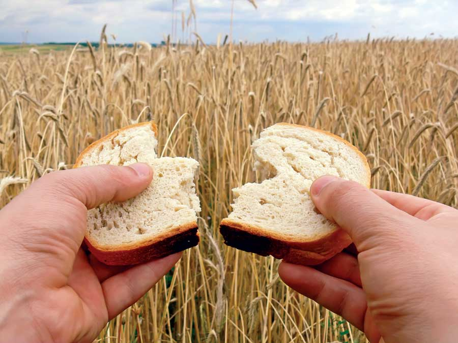

We now have solid, scientific evidence of this troubling trend. For example:
All of this evidence has been assembled and rigorously reviewed by Dr. Donald R. Davis, a now (mostly) retired chemist from the University of Texas.
So what’s causing these declines? The evidence indicates there are at least two forces at work. The first is what agriculture researchers call the environmental “dilution effect.” Davis notes that researchers have known since the 1940s that yield increases produced by fertilization, irrigation and other environmental means used in industrial farming tend to decrease the concentrations of minerals in those plants. These techniques give growers higher yields, and consumers get less expensive food. But now it appears there’s a hidden long-term cost - lowered food quality.
For example, a study of phosphorous fertilizer on raspberries found that applying high levels of phosphorus caused the yield to double and concentrations of phosphorus to increase in the plants, but meanwhile levels of eight other minerals declined by 20 to 55 percent!
The other force at work is what Davis calls the genetic dilution effect - the decline in nutrient concentration that results when plant breeders develop high-yielding varieties without a primary focus on broad nutrient content. That’s what the studies of wheat, corn and broccoli confirm.
In fruits, vegetables and grains, usually 80 to 90 percent of the dry weight yield is carbohydrates - sugars and starches (the last things we need more of in the American diet). Davis says that when breeders (and growers) specifically choose varieties for high yields, they are selecting mostly for the highest amounts of carbohydrates.
“These studies suggest to me that genetic dilution effects may be common when selective breeding successfully increases crop yield,” Davis says. USDA data indicate that yields have increased an average of 1.8 fold for 24 vegetables and 1.3 fold for six fruits over the past 30 years.
What can we do? Vegetables and fruits are our richest sources of many vitamins and minerals. It seems likely that those of us who grow food gardens (or shop at farmers markets) will get more nutrient-dense foods if we grow (or pay a premium for) older, lower-yielding heirloom varieties. Odds are good that heirloom varieties may be more nutritious than current supermarket fare. Plus, using organic methods such as moderate amounts of slow-release fertilizers should help us get maximum nutrition from our homegrown produce. And most important of all, Davis points out that the nutrient declines in processed foods are much deeper and broader than the declines in fresh, whole foods.
You can review the full study by requesting “Declining Fruit and Vegetable Nutrient Composition,” HortScience, 2009; 44:15, at your local library.
|
 ISTOCK PHOTO/WOJTEK KRYCZKA Plant breeders have increased yields in most crops, but this is causing our food’s nutrient content to decline. |
|
|